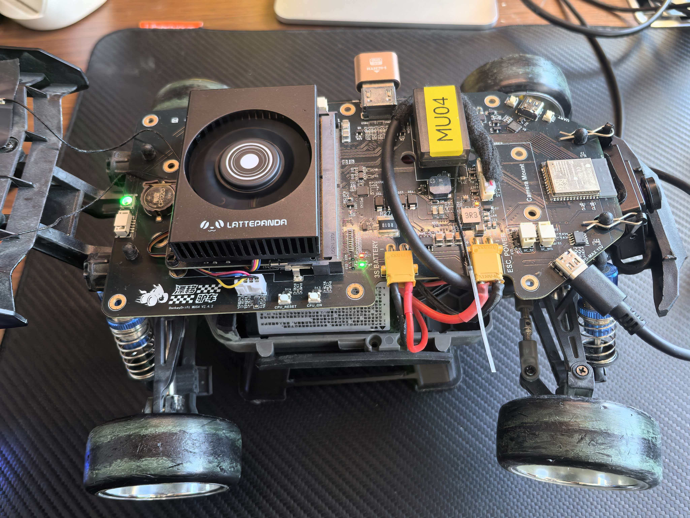

Hardware Interaction · Human × Machine Co-Driving
招式已装填 · 人机共驾模式启动
漂移驴车
把《四驱兄弟》里“喊一声招式，赛车就回应”的童年幻想，做成一台真正能听懂人话、看清赛道、反馈状态、与人共驾的 AI 赛车。
Voice Drift Command
N100 Brain
ESP32 Cerebellum
Local First
会沟通
语音对话、状态反馈、招式式交互
会思考
视觉理解、规划决策、本地与云端路由
会动作
姿态控制、传感采样、低延迟执行
像动画里一样回应你，也像教练一样辅助你。
「去吧——旋风冲锋龙卷风！！！」——小豪
赛道实拍
真实漂移比任何概念示意都更有说服力。以下展示驴车在平路和越野场景中的动态表现。
蘑菇云漂移首秀
展示高速漂移下的动态表现，尽显“能上镜”的竞速气质。
赛道硬件交互
产品形态AI 共驾赛车
核心架构LattePanda MU N100 + ESP32
应用形态开发平台 / 教育展示 / 竞速体验
当前基础底盘、主板、固件均已具备原型条件
目标体验能交流、能思考、能协作的赛车搭档
“大家真正想要的，不是更复杂的功能，而是一台能交流、能思考、能一起丝滑漂移的赛车小伙伴。”
DonkeyDrift 漂移驴车队 · 项目初心
问题与灵感
传统遥控车已经很快，却几乎没有“沟通能力”。它不会告诉你刚才那个弯是否打滑，不会提醒你电量即将见底，也不能理解你说出的指令和期待。
痛点
单板方案 常把视觉、语音、规划和控制全塞进一块板子，高算力任务与实时控制互相争抢资源，导致“模型跑不动”或“控制不稳定”。
双板方案 虽然分工更合理，但很多项目通信协议松散、状态回传零散，难以形成可维护的工程闭环。
灵感
一次线下活动中，有小朋友问：“它能像四驱兄弟里的赛车一样听话吗？”这句话让我们意识到，真正打动人的并不是自动驾驶本身，而是人和车之间的默契。
答案
漂移驴车要做的，不只是更聪明的车，而是一套可交流、可解释、可扩展的人机共驾原型：大脑负责思考，小脑负责行动，车体状态再反哺给对话与决策。
产品是什么
这是一台基于美嘉欣 H16 大脚车底盘和自研 MUS4 车载主板的 AI 共驾赛车，用双芯分工把“会思考”和“会动作”同时做对。
大脑
LattePanda MU · Intel N100
- 运行本地优先的语音对话链路
- 处理视觉理解、路线规划和指令生成
- 按网络和任务复杂度切换本地 / 云端推理
- 把车体状态注入上下文，让回答更贴近真实赛况
小脑
ESP32 · 实时控制单元
- 负责电机控制、姿态稳定和传感器采集
- 持续读取 IMU、电流、电压等实时信息
- 以低延迟方式执行速度、转向和安全策略
- 通过高速串口把状态、故障码和姿态数据回传给大脑

实物基础已经上车：MUS4 主板、LattePanda MU 模组、电源与外围器件均已完成整合，说明这套方案不是停留在概念图上的想法，而是有坚实本地硬件底座的工程原型。
本地基础
MUS4 车载主板 是整套系统真正落地的关键。它把 N100 大脑、ESP32 小脑、电源管理、接口扩展和车载布置放到同一张板上，让“本地优先”的策略有了真实硬件支撑。
对评委来说，这张图最重要的信号不是“主板长什么样”，而是 你们已经把算力、控制、供电和上车安装的问题走到工程实现阶段，后续的语音、视觉和共驾体验是在真实载体上继续生长，而不是从零开始拼概念。
- LattePanda MU 模组已经部署在车上，可承担本地推理与系统编排
- ESP32 控制链路和电源接口已经形成实际布线基础
- 主板与底盘一体化安装，说明整车形态具备持续迭代条件
图 1：漂移驴车本地双脑数据流架构
flowchart LR
classDef io fill:#16263d,stroke:#6aa6ff,color:#eef6ff,stroke-width:1.6px;
classDef brain fill:#19355c,stroke:#7fb1ff,color:#f7fbff,stroke-width:1.6px;
classDef local fill:#10263f,stroke:#4fcbff,color:#eff9ff,stroke-width:1.6px;
classDef router fill:#3e2053,stroke:#ff8ee7,color:#fff5fd,stroke-width:1.8px;
classDef cerebellum fill:#2d2b15,stroke:#ffd35a,color:#fff8d8,stroke-width:1.6px;
classDef chassis fill:#202020,stroke:#cfd6e8,color:#ffffff,stroke-width:1.4px;
MIC["📡 麦克风阵列
USB 音频输入"]:::io --> WAKE["唤醒检测
Porcupine"]:::brain
WAKE --> ASR["流式 ASR
whisper.cpp"]:::brain
ASR --> LLM["本地 LLM
Qwen2.5-1.5B GGUF"]:::local
CAM["📹 USB 摄像头
视觉输入"]:::io --> VLM["本地 VLM
Qwen2-VL-2B"]:::local
LLM --> ROUTER["推理路由器
本地 ↔ 云端 API"]:::router
VLM --> CTX["视觉语义注入
对话上下文"]:::router
CTX --> ROUTER
ROUTER --> CTRL["控制指令生成
语义 → 运动目标"]:::brain
ROUTER --> TTS["本地 TTS
MeloTTS"]:::brain
TTS --> SPK["🎧 扬声器
USB / 3.5mm 输出"]:::io
subgraph BRAIN["🧠 LattePanda MU · N100 大脑"]
WAKE
ASR
LLM
VLM
CTX
ROUTER
CTRL
TTS
end
CTRL --> BUS["串口 / SPI 高速链路"]:::router
BUS --> ESP["⚡ ESP32 小脑"]:::cerebellum
subgraph CERE["小脑实时控制层"]
PID["电机 PID 控制"]:::cerebellum
SERVO["舵机角度控制"]:::cerebellum
IMU["IMU 姿态反馈"]:::cerebellum
PWR["电流 / 电压采集"]:::cerebellum
ERR["故障码上报"]:::cerebellum
end
ESP --> PID
ESP --> SERVO
ESP --> IMU
ESP --> PWR
ESP --> ERR
PID --> CAR["🏎️ 驴车底盘
美嘉欣 H16"]:::chassis
SERVO --> CAR
CAR -. 车体视角 / 路线 / 障碍 .-> CAM
IMU --> FB["状态数据回流"]:::router
PWR --> FB
ERR --> FB
FB --> ROUTER
这张图强调的不是单纯的模块堆叠，而是完整的数据流闭环：语音和视觉进入 N100 大脑，语义决策通过串口 / SPI 下发到 ESP32 小脑，车体姿态、电流电压和故障码再回灌到上下文里，最终让驴车既能“执行”，也能“解释自己刚刚做了什么”。
目标用户与使用场景
我们把用户分成三类，不同人群看中的点不同，但都会在这台车上看到“AI 能力真正落到真实世界”的过程。
| 用户 |
典型场景 |
现在的不便 |
漂移驴车带来的变化 |
| 智能硬件 / 机器人开发者 |
验证语音、视觉、本地推理和控制协议 |
高算力与低延迟常常互相牵制，工程结构不清晰 |
提供可复用的 大脑 / 小脑 分层样板 |
| 青少年科创教育 / 创客赛事团队 |
课程演示、社团活动、创客比赛、公开路演 |
很多 AI 硬件项目要么能讲但不好玩，要么能跑却很难解释 |
把语音、视觉、传感器和控制拆成可看、可讲、可玩的模块 |
| 遥控车 / 漂移车玩家 |
漂移、竞速、障碍穿越、线下聚会 |
传统遥控车只有操控，没有交流，没有状态反馈 |
从“我控制车”升级成 我和车一起完成动作 |
1
开发者模式 用它验证本地推理、实时控制、状态回传和协议设计，缩短从概念验证到原型演示的距离。
2
教育模式 让学生不只听懂“什么是大模型”，还亲眼看到大模型如何通过小脑驱动车轮、感知姿态、回答真实问题。
3
玩家模式 在漂移和竞速中加入语音互动、状态播报和共驾反馈，把赛车从工具变成搭档。
价值与意义
这个创意的价值不只在“会说话的赛车”本身，更在于它把复杂的 AI 硬件系统变成一套更容易复用、理解和传播的工程方法。
01
技术复用价值
把高算力推理与低延迟控制明确拆分，为更多边缘机器人项目提供稳定的参考结构。
02
效率价值
减少开发者在 Linux 调度、控制抖动、协议混乱之间反复折中，把精力留给真正的体验创新。
03
教育与社会价值
让青少年和非技术观众通过一台车理解语音、视觉、传感器与控制是如何协同工作的。
技术创新
大脑 / 小脑分离架构 让 N100 专注语音、视觉和规划，让 ESP32 专注实时控制，彼此不再争抢同一份计算资源。
体验升级
ESP32 回传的姿态、电量、电流等数据会进入对话上下文，因此赛车可以回答“刚才那下漂移有多大”“电池还能撑多久”这类只有它自己知道的问题。
传播潜力
相比抽象的模型 Demo，一台会说话、会漂移、会反馈的赛车更容易形成线下展示、社区传播和赛事演示的记忆点。
当前进度
项目不是从零开始想象，而是在已有底盘、主板和小脑能力的基础上，向“人机共驾”再推进一步。
基础完成
底盘与自动驾驶原型
DonkeyCar + 行为克隆
- 单摄像头自动驾驶已具备基础循迹能力
- 弯道跟随与底盘调校已有实践验证
硬件完成
MUS4 车载主板
N100 大脑 + ESP32 小脑
固件完成
ESP32 小脑能力
实时控制与采样
- 电机 PID 控制已验证
- IMU 姿态读取已验证
- 电流电压采样已验证
比赛阶段目标
我们希望在比赛周期内，把“听懂人话的赛车”做成一个连续、可信、可展示的工程样机，而不是零散功能的拼接。
目标一
重建语音交互链路
本地优先 × 云端助力
- 完成 x86 端唤醒、ASR、LLM、TTS 管线
- 支持实时打断、上下文保持和指令下发
目标二
打通状态反哺闭环
车体状态进入对话
- 让赛车能解释自己的姿态和能耗
- 支持“刚才漂移怎么样”“还能跑多久”等问答
目标三
完成比赛演示链路
连续 3 分钟运行
- 本地对话
- 语音控车
- 碰撞预警
- 本地 / 云端切换
- 小脑数据问答
目标四
形成可复用成果
开源 + 展示
- 输出 GitHub 开源仓库
- 整理部署脚本与协议文档
- 完成 TRAE Work 创意展示 HTML